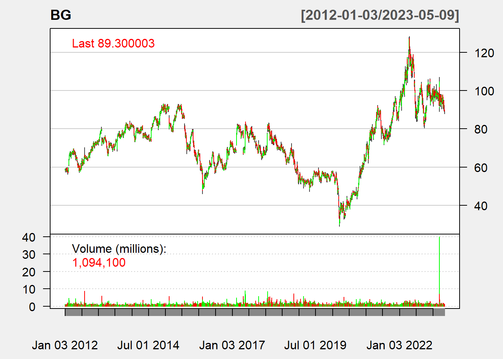
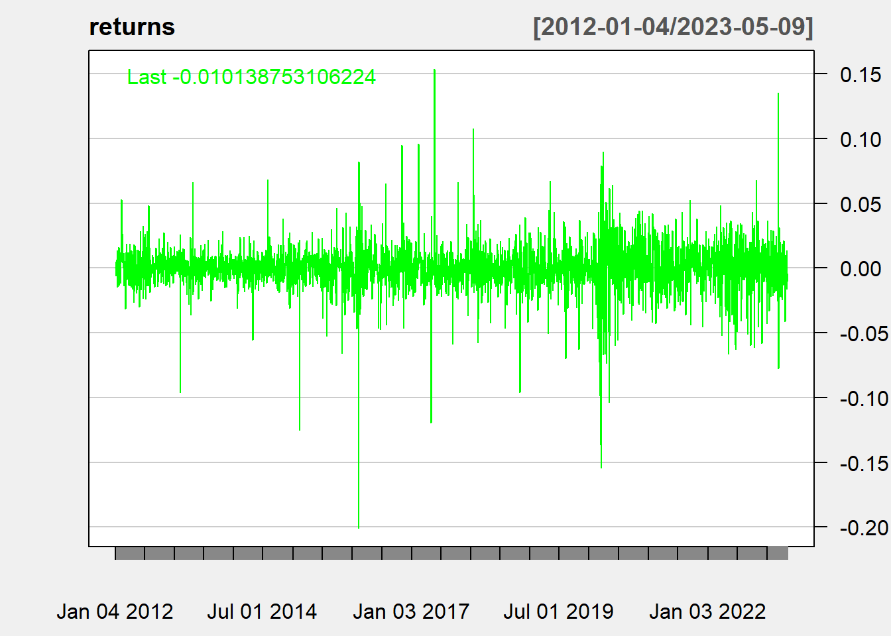
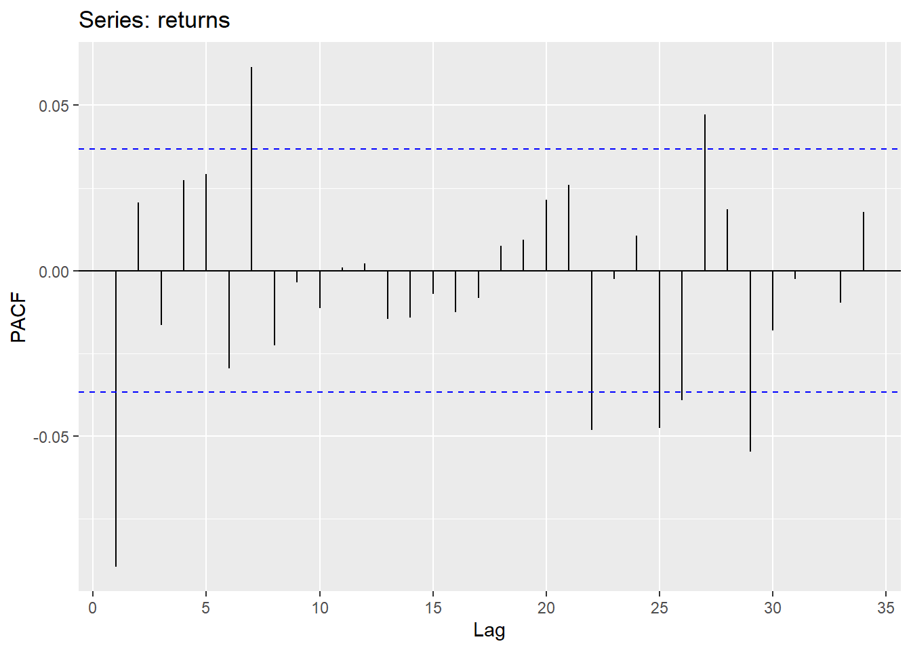
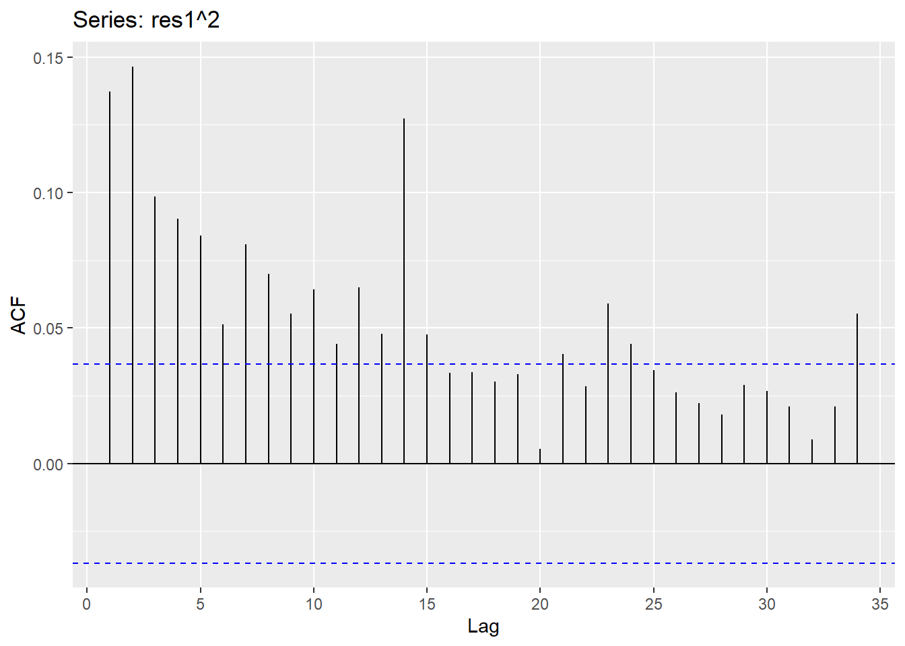
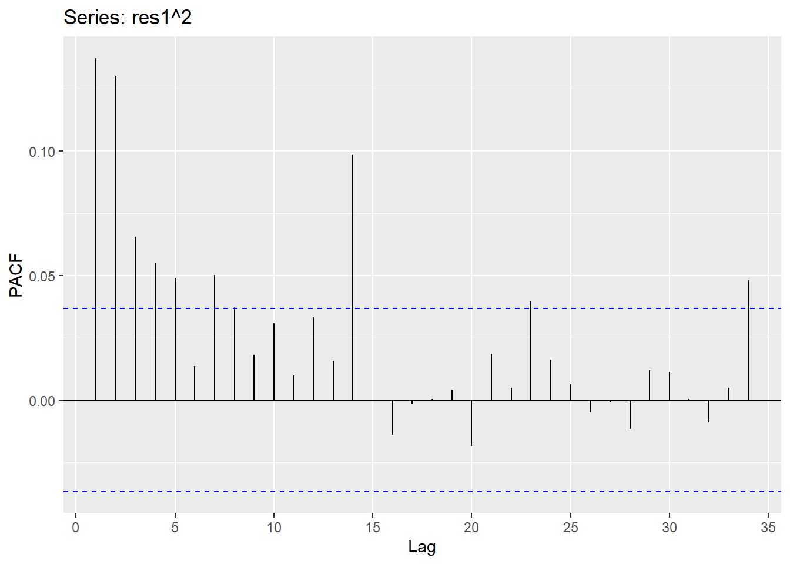

Financial Time Series Models
For this tab, the financial time series models will be implemented, to mainly forecast the volatility of future returns, an important factor in crops trading. The data for this part of analysis is the closing returns of stocks of Bunge Limited, an American agribusiness company that mills, manufactures, and sells wheat as a main business (Source).
Code
getSymbols("BG", from="2012-01-01", src="yahoo")[1] "BG"First, let’s look at the plot of the data and check the stationarity and volatility.
Code
chartSeries(BG, theme=chartTheme("white"), bar.type="hlc",
up.col="green", dn.col="red")
Code
BG_close = Ad(BG)
returns = diff(log(BG_close))
chartSeries(returns, theme=chartTheme("white"), bar.type="hlc",
up.col="green", dn.col="red")
First, from the candlestick time series plot, there is a huge increase of the closing price of the stock since 2020, however it started to decline and is at a constant level since 2022. The closing returns does not look completely stationary, and the volatility is also hard to tell. After the differencing and log transform steps, the data seems to be stationary, while also having an increase in volatility.
ACF/PACF
Code
ggAcf(returns)
Code
ggPacf(returns)
Then I will look at the ACF and PACF of the absolute returns and squared returns.
Code
ggAcf(abs(returns))
Code
ggAcf(returns**2)
It seems that there is high correlation for the absolute and square of the returns. Therefore, fitting with just ARCH/GARCH model is not enough, and AR/ARIMA+ARCH/GARCH should be used.
Select AR/ARMA/ARIMA Model
First, with AR model I want to choose the best p value.
Code
scores = matrix(rep(NA,4*6), nrow=6, ncol=4)
i=1
for (p in 0:5){
model = Arima(returns, order=c(p,0,0), include.drift=TRUE)
scores[i,] = c(p, model$aic, model$bic, model$aicc)
i = i+1
}
scores = as.data.frame(scores)
colnames(scores) = c("p","AIC","BIC","AICc")
scores p AIC BIC AICc
1 0 -14697.77 -14679.89 -14697.76
2 1 -14718.70 -14694.88 -14718.69
3 2 -14717.92 -14688.13 -14717.89
4 3 -14716.69 -14680.95 -14716.66
5 4 -14716.81 -14675.12 -14716.77
6 5 -14717.24 -14669.58 -14717.19It is obvious that p=1 is the best model.
With ARIMA model I want to choose the best p,d,q values.
Code
scores = matrix(rep(0, 6*18), nrow=18, ncol=6)
i=1
for (p in 0:2){
for (d in 0:1){
for (q in 0:2){
model = Arima(returns, order=c(p,d,q), include.drift=TRUE)
scores[i,] = c(p,d,q,model$aic, model$bic, model$aicc)
i = i+1
}
}
}
scores = as.data.frame(scores)
colnames(scores) = c("p","d", "q","AIC","BIC","AICC")
knitr::kable(scores, format="pipe", padding=30, digits=2)| p | d | q | AIC | BIC | AICC |
|---|---|---|---|---|---|
| 0 | 0 | 0 | -14697.77 | -14679.89 | -14697.76 |
| 0 | 0 | 1 | -14717.69 | -14693.86 | -14717.68 |
| 0 | 0 | 2 | -14717.46 | -14687.68 | -14717.44 |
| 0 | 1 | 0 | -12470.96 | -12459.05 | -12470.96 |
| 0 | 1 | 1 | -14683.66 | -14665.79 | -14683.65 |
| 0 | 1 | 2 | -14703.40 | -14679.57 | -14703.38 |
| 1 | 0 | 0 | -14718.70 | -14694.88 | -14718.69 |
| 1 | 0 | 1 | -14718.55 | -14688.77 | -14718.53 |
| 1 | 0 | 2 | -14716.61 | -14680.87 | -14716.58 |
| 1 | 1 | 0 | -13515.42 | -13497.55 | -13515.41 |
| 1 | 1 | 1 | -14704.42 | -14680.59 | -14704.41 |
| 1 | 1 | 2 | -14704.31 | -14674.53 | -14704.29 |
| 2 | 0 | 0 | -14717.92 | -14688.13 | -14717.89 |
| 2 | 0 | 1 | -14715.84 | -14680.10 | -14715.81 |
| 2 | 0 | 2 | -14714.64 | -14672.95 | -14714.60 |
| 2 | 1 | 0 | -13847.40 | -13823.57 | -13847.38 |
| 2 | 1 | 1 | -14703.67 | -14673.89 | -14703.65 |
| 2 | 1 | 2 | -14702.34 | -14666.60 | -14702.31 |
It seems that the model ARIMA(1,0,0) is the best model here, and this is the same model as the previous step. Therefore, it can be determined that the best model for now is AR(1) model.
Standardized Residuals Plot
I will now check the standardized residuals plot of the previous selected model, to see whether further modeling is needed.
Code
ar1 = Arima(returns, order=c(1,0,0))
res1 = ar1$residuals
ggAcf(res1^2)
Code
ggPacf(res1^2)
It seems that there is still high correlation from the ACF and PACF of the squared residuals, therefore for further modeling I can look for appropriate ARCH or GARCH model and compare the performances.
AR+ARCH Model
In this step I will fit the AR model with different ARCH models and find a best one.
Code
arch_list = list()
i=1
for (p in 1:10){
arch_list[[i]] = garch(ar1$res[2:(length(ar1$res)-1)], order=c(0,p), trace=F)
i = i+1
}Look for the best ARCH model here by comparing the AIC scores.
Code
aic_arch = sapply(arch_list, AIC)
which(aic_arch==min(aic_arch))[1] 3Therefore, ARCH3 is the best one here.
Code
arch3 = garch(ar1$res[2:(length(ar1$res)-1)], order=c(0,3), trace=F)
print(aic_arch[3])[1] -15088.7AR+GARCH Model
For the AR+GARCH model, based on the ACF and PACF of the squared residuals of AR(1), I picked the orders of the model to be order[1]=[1,2], order[2]=[1,2].
Code
garch11 = garchFit(formula=~garch(1,1), data=res1[2:(length(res1)-1)], trace=F)
garch12 = garchFit(formula=~garch(1,2), data=res1[2:(length(res1)-1)], trace=F)
garch21 = garchFit(formula=~garch(2,1), data=res1[2:(length(res1)-1)], trace=F)
garch22 = garchFit(formula=~garch(2,2), data=res1[2:(length(res1)-1)], trace=F)Code
garch_models = c("garch(1,1)", "garch(1,2)", "garch(2,1)", "garch(2,2)")
garch_AIC = c(garch11@fit$ics[1],garch12@fit$ics[1],garch21@fit$ics[1], garch22@fit$ics[1])
garch_BIC = c(garch11@fit$ics[2],garch12@fit$ics[2],garch21@fit$ics[2], garch22@fit$ics[2])
garch_SIC = c(garch11@fit$ics[3],garch12@fit$ics[3],garch21@fit$ics[3], garch22@fit$ics[3])
garchs = data.frame(garch_models, garch_AIC, garch_BIC, garch_SIC)
garchs garch_models garch_AIC garch_BIC garch_SIC
1 garch(1,1) -5.302291 -5.293943 -5.302295
2 garch(1,2) -5.304602 -5.294167 -5.304609
3 garch(2,1) -5.301434 -5.290998 -5.301440
4 garch(2,2) -5.303902 -5.291380 -5.303911It looks like that GARCH(1,2) is the best model based on the three measures. Therefore, the best model here is AR(1)+GARCH(1,2).
Best Model
To find the better one from AR(1)+ARCH(3) and AR(1)+GARCH(1,2), I will compare their AIC score.
Code
print(paste0("AIC of ARCH(3) = ", aic_arch[3]))[1] "AIC of ARCH(3) = -15088.6996502879"Code
print(paste0("AIC of GARCH(1,2) = ", garch11@fit$ics[1]*length(garch12@data)))[1] "AIC of GARCH(1,2) = -15132.7394635695"It looks like the AIC of the AR(1)+GARCH(1,2) model is smaller. We will then look at some model diagnosis of these two models.
Code
summary(arch3)
Call:
garch(x = ar1$res[2:(length(ar1$res) - 1)], order = c(0, 3), trace = F)
Model:
GARCH(0,3)
Residuals:
Min 1Q Median 3Q Max
-8.75236 -0.47008 0.02229 0.51018 10.54720
Coefficient(s):
Estimate Std. Error t value Pr(>|t|)
a0 2.002e-04 2.675e-06 74.836 < 2e-16 ***
a1 2.106e-01 1.708e-02 12.329 < 2e-16 ***
a2 1.606e-01 1.464e-02 10.973 < 2e-16 ***
a3 6.456e-02 9.958e-03 6.484 8.95e-11 ***
---
Signif. codes: 0 '***' 0.001 '**' 0.01 '*' 0.05 '.' 0.1 ' ' 1
Diagnostic Tests:
Jarque Bera Test
data: Residuals
X-squared = 20717, df = 2, p-value < 2.2e-16
Box-Ljung test
data: Squared.Residuals
X-squared = 0.27658, df = 1, p-value = 0.599Code
summary(garch12)
Title:
GARCH Modelling
Call:
garchFit(formula = ~garch(1, 2), data = res1[2:(length(res1) -
1)], trace = F)
Mean and Variance Equation:
data ~ garch(1, 2)
<environment: 0x0000011bb7955e68>
[data = res1[2:(length(res1) - 1)]]
Conditional Distribution:
norm
Coefficient(s):
mu omega alpha1 beta1 beta2
4.0753e-05 3.1451e-05 1.1964e-01 1.8923e-01 5.9916e-01
Std. Errors:
based on Hessian
Error Analysis:
Estimate Std. Error t value Pr(>|t|)
mu 4.075e-05 3.032e-04 0.134 0.8931
omega 3.145e-05 4.814e-06 6.533 6.46e-11 ***
alpha1 1.196e-01 1.649e-02 7.254 4.06e-13 ***
beta1 1.892e-01 9.046e-02 2.092 0.0364 *
beta2 5.992e-01 8.795e-02 6.812 9.60e-12 ***
---
Signif. codes: 0 '***' 0.001 '**' 0.01 '*' 0.05 '.' 0.1 ' ' 1
Log Likelihood:
7574.668 normalized: 2.654053
Description:
Wed May 10 00:37:46 2023 by user: 49789
Standardised Residuals Tests:
Statistic p-Value
Jarque-Bera Test R Chi^2 21465.62 0
Shapiro-Wilk Test R W 0.8911886 0
Ljung-Box Test R Q(10) 10.37341 0.4083662
Ljung-Box Test R Q(15) 13.42768 0.5693006
Ljung-Box Test R Q(20) 16.11302 0.7095885
Ljung-Box Test R^2 Q(10) 2.818155 0.9853854
Ljung-Box Test R^2 Q(15) 18.04306 0.2604083
Ljung-Box Test R^2 Q(20) 19.88941 0.4648663
LM Arch Test R TR^2 3.854605 0.9859193
Information Criterion Statistics:
AIC BIC SIC HQIC
-5.304602 -5.294167 -5.304609 -5.300839 Looking at the Ljung-Box test, the p-values of the tests on squared residuals are all greater than 0.05, with GARCH(1,2) has a little larger p-value, meaning that the two models both represents the residuals well. Therefore, AR(1)+GARCH(1,2) wins on lower AIC score and is the best model.
The equation of this model will be:
\[ σ_t^2 = κ+γ_1σ_{t-1}^2+α_1ε_{t−1}^2+α_2ε_{t−2}^2\]